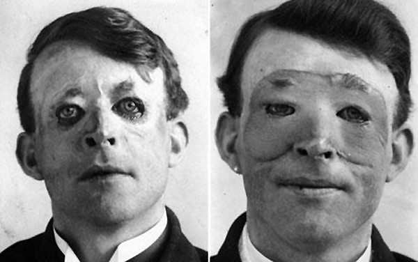

What is Plastic Surgery?
Plastic Surgery is quite a unique branch of the Medical field as it works all around the body. In this specialty, there are 3 main focuses; restoration, reconstruction and alteration. Taken from these examples, we can see that plastic surgery works mainly with fixing trauma scars and cosmetic purposes. However, Plastic can also improve the function of any part of the human anatomy except for the Central Nervous System.
Main parts of anatomy worked with:
- Skin, includes skin cancer, burns, birthmarks, scars and even tattoo removal
- Maxilofacial (The facial structure)
- Congenital Anomalies, include different deformed body parts; ears, palates, lips, etc.
Clarification
There are a number of false or inaccurate rumours about plastic surgery but none as deeply believed in as the name itself. The "Plastic" in Plastic Surgery does not directly mean the material plastic, rather comes from the Greek Language. Plastic comes from the word "Plastikos" which means "to mould". This is a great description of the functionality of this specific medical field as many of the procedures practised depend on moulding parts of the body to the desired format. Of course, it’s not a well-known fact that can cause problems for those who work in this field as well as those who choose to partake in such procedures.
Who does Plastic Surgery Affect?
Plastic Surgery is an extensively popular form of surgery as it can work with essential procedures and especially nonessential procedures. Of course, one unique fact about plastic surgery is that it can save lives, as well as improve them. There is 1 main of this field; being ’The 3Rs’. A number of celebrities who spend their days constantly under the spotlight also tend to lean towards getting cosmetics done to themselves.
Celebrities who've Had Plastic Surgery
- Kylie Jenner
- Ryan Gosling
- Katy Perry
- Brad Pitt
- Tom Cruise
- Zac Efron
- Kim Kardashian
- Tyra Banks
- Josh Hutcherson
- Britney Spears
- Cardi B.
- Angelina Jolie
- Christan Bale

How is Plastic Surgery Performed?
As such with any other field of surgery, there are a number of different procedures within this one as well:
For example, Skin Grafting:
Debated, Skin Grafting is the most common type of plastic surgery and has been for an incredibly long time. The main reason for this is because of when and how it is done. Skin Grafting is when healthy skin is removed from an unaffected area of the body and utilized to cover another part where the skin may have been damaged. For example, the majority of serious burn victims tend to have this procedure done to themselves after an accident.
Skin Grafting can also be used for open fractures, large wounds and even when skin is removed through surgical means. Cancer victims can also benefit from this surgery when affected skin is damaged. Like many other procedures in plastic surgery, skin grafting can be either an essential surgery or a cosmetic surgery. Of course, this depends on the situation of the patient themself
Why does Plastic Surgery Exist?
Plastic Surgery has been used effectively to save a large number of lives throughout time. During WWII, Plastic Surgery was used to fix the terrible trauma caused by warfare, especially the flying shrapnel from missiles and other debris. These terrible acts of war led to thousands of soldiers being left disfigured and heavily injured. Due to this, doctors took the initiative to save the lives of the men by utilizing plastic surgery. A unit was created for military veterans who were struck by these unfortunate events. Of course, this field of surgery was not nearly advanced back then as compared to now, which meant these doctors would ultimately have to use the "trial and error" method when performing. As gruesome as that may seem, these surgeons and heroes saved the lives of countless soldiers who were seemingly destined to die.
When was Plastic Surgery Created, Used? (Origin)
Obviously, plastic surgery never just popped out one day out of nowhere, rather gradually developed through time. As previously stated, plastic surgery was huge during WWII, and other wars, as the number of patients sky-rocketed. Before WWII, plastic surgery was never a genuine field of surgery as no one had come up with such an idea before, however, when the war struck, surgeons gained the leniency to experiment more and more with the human body. As the war progressed, so did the development of plastic surgery. One of the ’founding fathers’ of this field, Harold Gillies made his presense known during his time serving as a surgeon in the war.
Through the extensive research and determination from Harold Gillies, as well as his fellow surgeons, Plastic Surgery has progressed into being the game-changing field it is today!